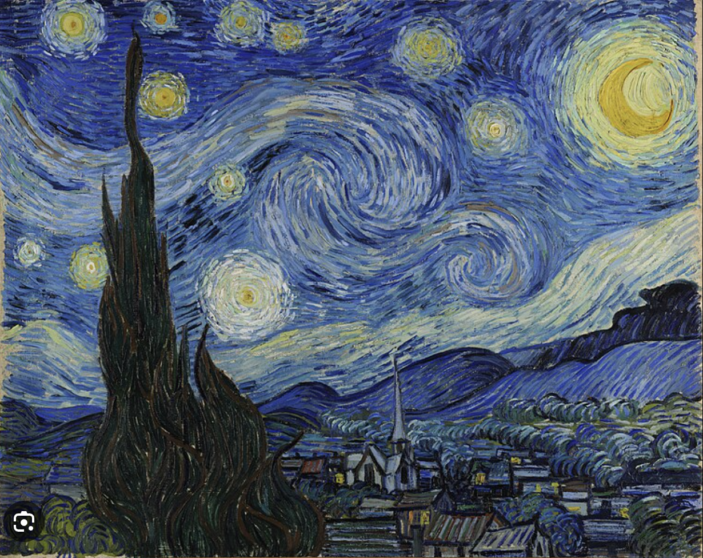
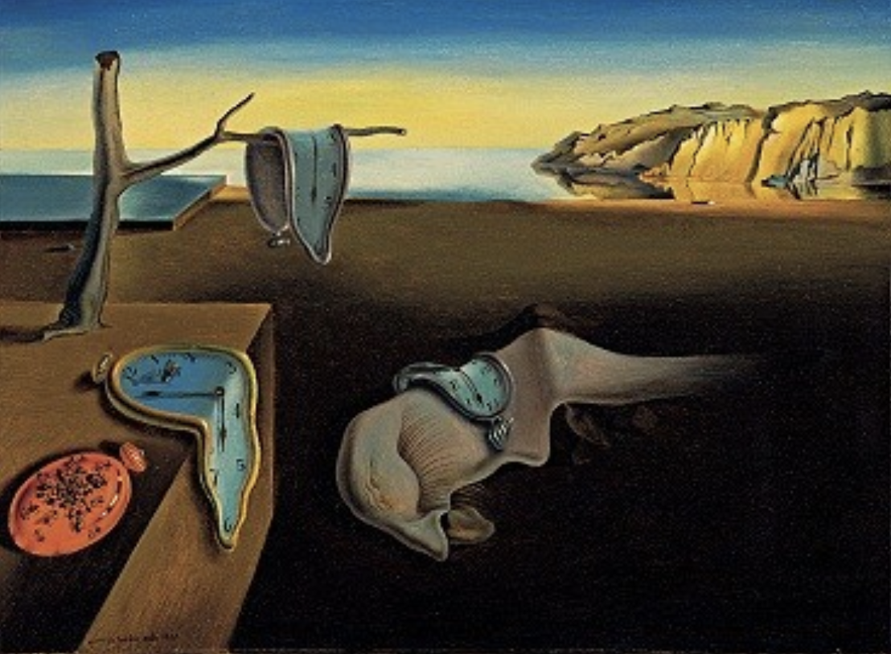
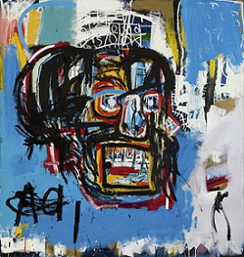

New experiment: testing an AI’s ability to describe and interpret a range of artwork, pushing it beyond simple recognition to uncover deeper narratives and emotions within each piece. For different types of art, I’m curious to see how the AI connects with human expressions captured in visuals. Join as I will explore what GPT-4 can really tell us about the art pieces it ‘views’.
Step 1: Selection of Artworks
I asked ChatGPT to give me three pieces of art that included diverse styles and periods. It suggested:
Starry Night - Vincent Van Gogh, Post-Impressionism
The Persistance of Memory – Salvador Dali, Surrealism
Untitled - Jean Michael Basquiat, Neo-expressionism
My two prompts, in order to not allow the GPT to simply look up the piece in its database to provide info, are
Describe the elements and details visible in the image this art piece and what emotions and themes do you think the artist is trying to convey?.
Let’s start:
Starry Night

GPT’s Description: This image displays a painting featuring a vibrant night sky filled with swirling clouds, bright stars, and a glowing crescent moon. In the foreground, there is a tall, dark cypress tree that stands out against the sky, drawing the viewer’s eye upward. Below, a quaint village rests under the celestial dance, with peaceful houses, rolling hills, and a church spire that echoes the verticality of the cypress tree. The brushwork is expressive and dynamic, with thick impasto, which adds texture and a sense of movement. The color palette is dominated by shades of blue and yellow, creating a stark contrast between the cool night and the warm, lively stars. The artist seems to convey a mix of emotions and themes through this piece. The tumultuous sky could suggest a feeling of unrest or turmoil, while the stars and moon provide a sense of light and hope amidst the darkness. There is a dreamlike quality to the scene, evoking wonder and awe at the vastness and beauty of the night sky. The painting could also reflect on the eternal nature of the cosmos in contrast with the serene and unchanged village, a juxtaposition of the infinite and the temporal. This artwork is often seen as a symbol of the artist’s internal feelings and struggles, as well as a testament to the power of nature and the universe.
Without technically knowing which painting I was showing it, the GPT nails the essence of “Starry Night,” emphasizing its swirling skies and vibrant contrasts, and overall seeming to capture van Gogh’s emotional depth. It suggests the painting as a dance between turmoil and tranquility, which is true and ties van Gogh’s personal struggles to the allure of the night sky.
Now, I am going to put its description through an AI Art Professor. Here’s my prompt:
You are an art professor. Your students see paintings with no backstory and try to describe what is happening in the painting as well as the emotions conveyed. You will shortly and cohesively assess your students’ analysis and give a grade for accuracy.
Let’s see what happens:
AI Prof: The student’s analysis of “Starry Night” by Vincent van Gogh is insightful and demonstrates a deep engagement with the visual and thematic elements of the painting. The description accurately captures the painting’s key components: the swirling night sky, the bright stars and crescent moon, the prominent cypress tree, and the tranquil village. The mention of the expressive brushwork and the use of color to convey emotion and contrast between the celestial and the earthly is particularly astute.
The interpretation of the emotions and themes within the painting is thoughtful and well-articulated. The student correctly identifies the potential representation of turmoil and hope, the dreamlike atmosphere, and the contemplation of the infinite versus the temporal. Additionally, recognizing the painting as a reflection of the artist’s internal feelings and struggles, as well as a commentary on the power of nature and the universe, shows a nuanced understanding of how “Starry Night” can be seen as both a personal and universal statement.
Grade: 95/100
The analysis is comprehensive, accurately describing the painting’s visual elements and thoughtfully interpreting its emotional depth and thematic content. The student has successfully connected the technical aspects of van Gogh’s style with the broader existential questions the painting raises, demonstrating both a keen eye for detail and an ability to engage with complex ideas.
Great job by GPT. Starting off with a 4.0 GPA. Next, ‘The Persistance of Memory.’
The Persistance of Memory

GPT’s Description: The image displays a surreal landscape, characteristic of Salvador Dalí’s iconic style. There are several melting clocks draped over different surfaces, such as a tree branch, the edge of a table or platform, and what appears to be a sleeping face molded into an amorphous shape. In the background, there’s a barren landscape with cliffs under a darkening sky transitioning from sunset hues to a deep blue. The sea is visible on the horizon. The various elements, such as the melting clocks, suggest themes of the fluid nature of time and the insignificance of temporal concerns in the dream world or in the scope of the unconscious mind. The barren landscape and twilight sky may evoke feelings of isolation, tranquility, or impending change. The artist seems to be challenging the viewer’s perception of reality and time. The persistence of memory, as one theme suggested by the melting clocks, could signify the relativity and subjective experience of time as opposed to its conventional, linear measurement. There is also a sense of decay and transformation, which might imply that all things are transient and subject to change, regardless of their perceived solidity. Emotionally, the piece has an eerie, dream-like quality. It might provoke contemplation, unease, fascination, or introspection in the viewer, depending on their personal response to such a surreal and thought-provoking scene.
Interesting, it recognized the style was Dali’s. Again, it does a great job describing the work. Let’s see what the professor says.
AI Prof: The student’s analysis of Salvador Dalí’s “The Persistence of Memory” is both accurate and perceptive, demonstrating an excellent understanding of the painting’s visual elements and underlying themes. The description of the surreal landscape, with its melting clocks and the amorphous shapes, captures the essence of Dalí’s work and his exploration of the dream world. The student’s observation of the setting—highlighting the barren landscape, the cliffs, and the transition from sunset hues to a deep blue sky—effectively sets the scene for the viewer.
The interpretation of themes such as the fluidity of time, the insignificance of temporal concerns within dreams or the unconscious mind, and the challenge to conventional perceptions of reality is insightful. The student adeptly identifies the central motif of the melting clocks as a representation of the subjective and relative nature of time, a key concept in Dalí’s work. The mention of decay and transformation, and the suggestion that the painting reflects on the transience of all things, shows a deep engagement with the painting’s existential dimensions.
The analysis also thoughtfully considers the emotional impact of the painting, recognizing its eerie, dream-like quality and potential to provoke a range of responses from contemplation to unease. This acknowledges the personal and subjective nature of art interpretation, which is particularly relevant in the context of surrealism.
Grade: 95/100
The student’s analysis is comprehensive and insightful, effectively combining a detailed description of the painting’s visual elements with a nuanced interpretation of its themes and emotional resonance. The analysis shows a sophisticated understanding of Dalí’s artistic intentions and the broader implications of his work, demonstrating both a keen eye for detail and an ability to engage with complex conceptual ideas.
Still, a 4.0! I have a feeling it recognizes the images somehow, so it is able to give super accurate descriptions. At the end, I’m going to ask the AI Prof to get more granular to crown a winning painting and give an overall grade.
Untitled

GPT’s Description: The image depicts a vibrant and complex painting that features an abstract representation of a human face. The artwork, characterized by its use of bold colors and intense brush strokes, includes a mix of elements that appear to overlay one another, giving the piece a sense of depth and texture. Diverse colors such as yellows, blues, reds, and blacks create a fragmented visage with different parts of the face represented in a disjointed fashion, contributing to a feeling of abstraction. The face has multiple eyes and overlapping lines that might suggest a feeling of being fractured or divided. Motifs that resemble both skeletal and muscular structures are apparent, giving an impression of an x-ray or an anatomical study. The painting includes textual elements, possibly signatures or short messages, that add to the chaotic and expressive nature of the work. This style of art, reminiscent of certain expressionist or modernist influences, could be seen as an exploration of the human condition, identity, or psychological states. The use of disarticulated and reconstructed facial features might convey emotions of confusion, angst, or a search for personal identity. It seems that the artist might be trying to express complex and possibly conflicting emotions through this piece. The chaotic layering and bright, clashing colors could represent the turmoil of the inner self, societal pressures, or the multifaceted nature of human perception and experience. Overall, the artwork encapsulates a sense of intensity and raw emotion, inviting viewers to interpret the piece through their own emotional responses.
I don’t know too much about the backstory and real meaning behind this painting, so let’s so what the Prof says.
AI Prof: The student’s analysis of the untitled piece by Jean-Michel Basquiat is insightful and demonstrates a good understanding of Basquiat’s style and thematic concerns. Basquiat’s work is known for its raw intensity, complex layering, and the integration of text and imagery to explore deep themes of identity, race, socio-political issues, and the human condition. The student’s description captures the essence of Basquiat’s artistic approach with attention to the vibrant use of color, intense brushwork, and the abstract representation of a human face.
The observation of the painting’s fragmented and disjointed aspects, along with the incorporation of skeletal and muscular motifs, aligns well with Basquiat’s interest in anatomical drawings and his ability to convey complex emotional and psychological states through his art. The mention of textual elements as part of the chaotic and expressive nature of the work is also accurate, as Basquiat often included words and phrases to enhance the meaning and impact of his images.
The interpretation that the painting explores themes such as the human condition, identity, and psychological states is perceptive. Basquiat’s art frequently delved into these areas, using his unique visual language to comment on his own identity and broader societal issues. The student’s analysis of the potential emotions conveyed—confusion, angst, a search for personal identity—along with the suggestion that the piece reflects on the turmoil of the inner self and societal pressures, shows a deep engagement with the possible meanings behind Basquiat’s work.
The analysis recognizes the intensity and raw emotion of Basquiat’s art and correctly identifies the invitation for viewers to engage with the piece on a personal level, interpreting it through their own experiences and emotional responses.
Grade: 93/100
The student’s analysis is thorough and demonstrates a keen insight into Basquiat’s artistic intentions and the thematic content of his work. While the interpretation is well-founded, offering slightly more specific examples of how Basquiat’s themes relate to broader cultural or personal narratives could enhance the analysis. Nonetheless, it is a thoughtful and well-articulated assessment of Basquiat’s untitled piece.
Me: Now, get more granular to crown a winning analysis and give an overall specific grade to each one.
AI Prof: To crown a winning analysis among the three discussed (Vincent van Gogh’s “Starry Night”, Salvador Dalí’s “The Persistence of Memory”, and Jean-Michel Basquiat’s untitled piece), we’ll assess each analysis based on depth, insightfulness, understanding of the artist’s intentions, ability to connect with broader themes, and the coherence of the argument presented. Here are the more granular assessments and overall specific grades:
Vincent van Gogh’s “Starry Night” Analysis Depth of Visual Description: Excellent. The student provides a detailed description of the painting’s key visual elements. Insightfulness and Interpretation: Very high. The analysis thoughtfully interprets the emotional and thematic content. Connection with Broader Themes: Strong. Makes clear connections between visual elements and broader existential themes. Coherence: The argument is cohesive and well-structured. Overall Specific Grade: 95/100
Salvador Dalí’s “The Persistence of Memory” Analysis Depth of Visual Description: Excellent. Accurately captures the surreal landscape and key components of Dalí’s work. Insightfulness and Interpretation: Very high. Provides a nuanced understanding of the themes of time and reality. Connection with Broader Themes: Strong. Effectively links Dalí’s personal symbols with universal concepts of time and existence. Coherence: The analysis is coherent, with a clear progression of ideas. Overall Specific Grade: 95/100
Jean-Michel Basquiat’s Untitled Piece Analysis Depth of Visual Description: Good. Captures the essence of Basquiat’s style but could delve deeper into specific elements. Insightfulness and Interpretation: High. Offers a solid interpretation of potential themes of identity and psychological states. Connection with Broader Themes: Good. Identifies relevant themes but could benefit from more direct connections to cultural or personal narratives. Coherence: The argument is mostly cohesive, though slightly more focus on unifying the analysis could enhance it. Overall Specific Grade: 93/100
Crowning a Winning Analysis:
The analyses of “Starry Night” and “The Persistence of Memory” are tied in their overall excellence, both receiving a 95/100. They demonstrate a deep understanding of the artworks, articulate the emotional and thematic depth effectively, and maintain a high level of coherence throughout. Choosing between these two is challenging as they both excel in different areas; “Starry Night” for its exploration of emotional depth and existential themes, and “The Persistence of Memory” for its nuanced understanding of surrealism and the critique of temporal reality.
However, if we must crown a winning analysis based on the slight nuances and the challenge of interpreting surrealism’s complex symbolic language, the analysis of Salvador Dalí’s “The Persistence of Memory” is awarded a marginal victory. The student’s ability to navigate Dalí’s complex visual and thematic content, especially considering the abstract nature of surrealism, showcases a slightly higher level of analytical skill and interpretative depth.
Revised Specific Grades:
Vincent van Gogh’s “Starry Night”: 95/100 Salvador Dalí’s “The Persistence of Memory” Analysis: 96/100 (to reflect the marginal victory) Jean-Michel Basquiat’s Untitled Piece Analysis: 93/100
AI’s Best Analysis: Dali’s ‘The Persistance of Memory’
In this experiment, the AI-generated analyses of iconic artworks showcased an impressive range of insight and interpretative skills, but I do believe that it probably tapped into its GPT database, where it surely has detailed descriptions regarding these three paintings (maybe a tiny bit less on Basquiat and that’s why the analysis was graded slightly lower?). Dalí’s piece narrowly clinched victory for its nuanced exploration of surrealism. This definitely revealed the AI’s great ability to generate insightful analyses solely from images, accurately identifying and interpreting visual elements, emotional tones, and overarching/underpinning themes of masterpieces of art like “Starry Night” and “The Persistence of Memory” without prior human input on context or significance. Again, it may have put two and two together, but still, I did not tell it what painting it was. Still, very impressed and fascinated again, and wondering why Basquiat’s analysis grade ended up lower.